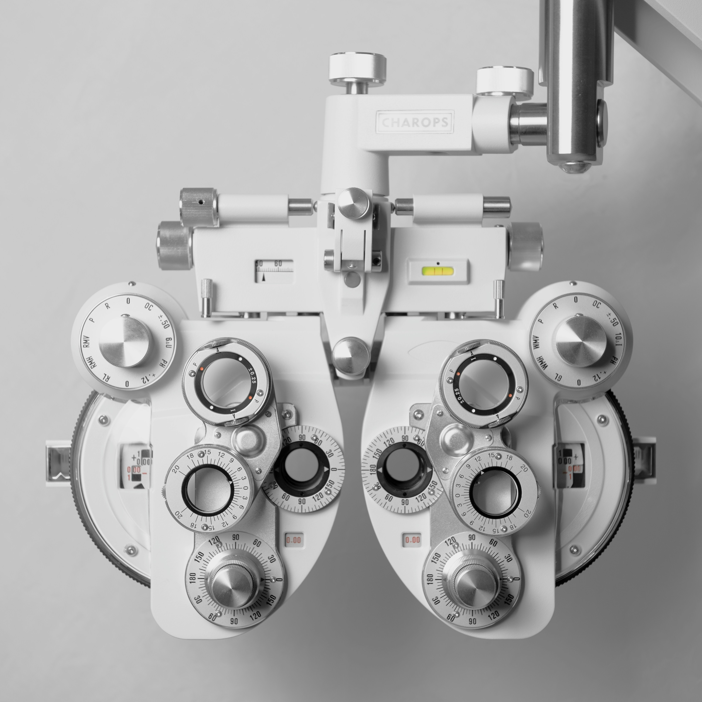
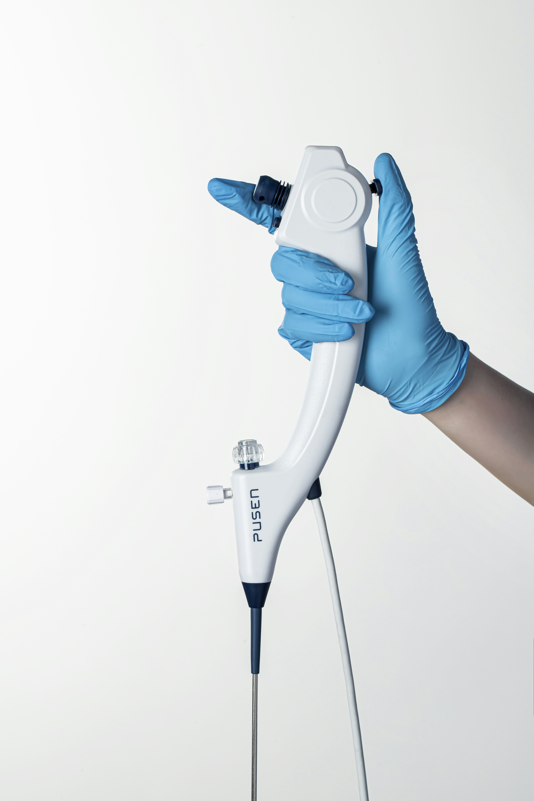
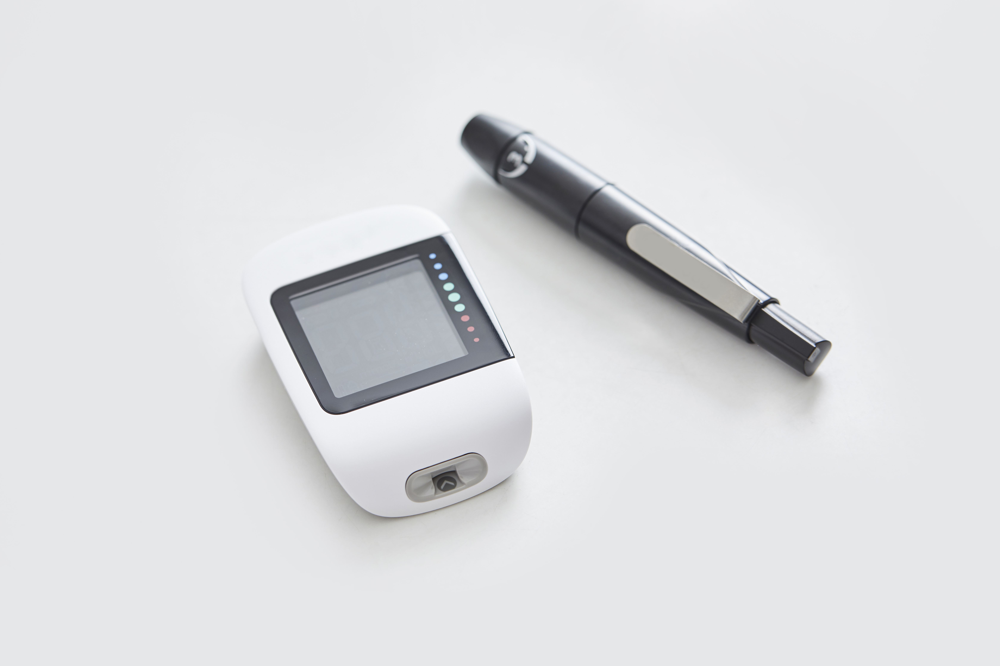

01
01
NovaSense Pro
유연한 바이오센서 패치로 7일 연속 혈당 모니터링. 스마트폰과 실시간 연동되어 언제 어디서나 확인합니다.
정밀한 진단이
치료의 시작입니다
굿너프는 체외진단의
새 기준을 씁니다.
연속혈당측정 시스템
실시간으로 혈당 변화를 추적해 당뇨병 환자의 자기 관리 능력을 높입니다. 최소 교정으로 14일 연속 착용이 가능합니다.
심장 바이오마커
트로포닌·BNP 등 주요 심장 마커를 현장에서 10분 내 정량 분석해 급성 심혈관 질환의 조기 감별을 지원합니다.
혈액응고 분석
PT·APTT·D-dimer를 포함한 응고 인자를 신속 측정해 항응고 치료 모니터링과 수술 전 검사를 지원합니다.
감염병 패널
독감·RSV·COVID-19 등 호흡기 병원체를 단일 카트리지로 동시 검출합니다. POCT 환경에 최적화된 멀티플렉스 솔루션입니다.
종양 유전자 분석
액체 생검 기반의 순환 종양 DNA(ctDNA) 검출로 암의 조기 발견과 치료 반응 모니터링을 가능하게 합니다.
자동화 검사 시스템
검체 처리부터 결과 보고까지 전 과정을 자동화해 검사실 처리량을 극대화하고 인적 오류를 최소화합니다.

NovaSense Pro
유연한 바이오센서 패치로 7일 연속 혈당 모니터링. 스마트폰과 실시간 연동되어 언제 어디서나 확인합니다.

ImmunoRapid CRP+
C반응성 단백질(CRP)과 PCT를 5분 내 동시 정량 분석. 감염 중증도 판별을 현장에서 즉시 지원합니다.

CardioPanel X1
트로포닌 I·T와 NT-proBNP를 단일 칩으로 측정해 급성 심근경색 진단 시간을 획기적으로 단축합니다.
나노 바이오센서부터 미세유체 플랫폼까지, 첨단 공학 기술을 의료 진단에 접목합니다. 연간 120건 이상의 특허를 출원하며 기술 우위를 지켜갑니다.
15분 이내 결과 제공, 99.5% 임상 정확도를 동시에 구현합니다. 골든 아워가 중요한 응급 의료 현장에서 즉각적인 판단을 지원합니다.
CE-IVD, FDA 510(k), ISO 13485 등 전 세계 주요 인증을 보유합니다. 100여 개국 의료 기관이 신뢰하는 체외진단 파트너입니다.
클라우드 기반 데이터 플랫폼으로 검사 결과를 병원 정보 시스템(HIS/LIS)과 실시간 연동합니다. 데이터 기반의 정밀의료를 실현합니다.
굿너프, FDA 510(k) 승인 획득… 미국 체외진단 시장 본격 진출 선언
2026. 07. 22
"현장 진단의 혁명" — NovaSense Pro, CES 2026 혁신상 수상
2026. 07. 08
굿너프, 유럽 체외진단기기 협회(EDMA) 정회원사 공식 등록
2026. 06. 25
CardioPanel X1, 국내 긴급사용승인 획득… 응급실 즉시 공급 시작
2026. 06. 10
굿너프 액체생검 플랫폼, 국립암센터와 공동 임상 연구 착수
2026. 05. 19
굿너프 2026 상반기 사업설명회 발표 자료 공개
2026. 05. 03